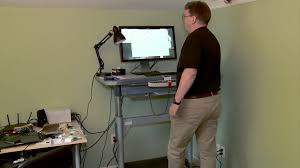
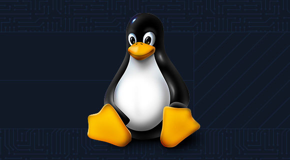

Linus Torvalds: Sosok di Balik Revolusi Open Source dan Fondasi Dunia Digital Modern
Dalam dunia teknologi modern, kita mengenal banyak tokoh besar—para vizioner, ilmuwan, pendiri perusahaan, dan para inovator yang mengubah arah sejarah komputasi. Namun hanya sedikit yang dampaknya begitu luas, begitu mendasar, dan begitu tak tergantikan seperti Linus Benedict Torvalds, pencipta Linux kernel dan Git, dua teknologi yang menjadi pondasi hampir seluruh infrastruktur digital saat ini.
Artikel ini akan membahas perjalanan hidup, motivasi, filosofi kerja, kontribusi, dan warisan Torvalds dalam dunia teknologi modern. Dengan membaca ini, kita akan memahami mengapa nama Linus Torvalds tidak sekadar tercatat dalam sejarah komputer—melainkan menjadi legenda hidup yang mempengaruhi cara dunia bekerja.
Awal Kehidupan: Dari Helsinki untuk Dunia
Linus Torvalds lahir pada 28 Desember 1969 di Helsinki, Finlandia, dalam keluarga akademisi dan jurnalis. Sejak kecil ia bukan sosok yang menonjol secara sosial—ia lebih sering digambarkan sebagai anak yang introvert, teliti, dan terobsesi dengan mesin logis.
Perjalanan “romantis” Linus dengan komputer dimulai saat ia meminjam Commodore VIC-20 milik kakeknya. Sejak itu, ia tertarik pada bagaimana sebuah mesin dapat “taat” pada instruksi manusia secara presisi. Tidak seperti anak lain, ia bukan pemain game; ia justru penasaran bagaimana game tersebut dibuat.
Pada 1988, ia masuk ke University of Helsinki dan mempelajari ilmu komputer. Di sinilah Torvalds bertemu dengan sistem operasi Unix, dan ketertarikannya berubah menjadi obsesi serius: ia ingin memahami, mengutak-atik, bahkan memperbaiki cara kerja sistem operasi.

Awal mula perjuangan linus
“Hanya Hobi Kecil”: Kelahiran Linux Kernel
Karya terbesar Linus dimulai dari kalimat legendaris di sebuah newsgroup Usenet pada 25 Agustus 1991:
Hello everybody… I’m doing a (free) operating system, just a hobby, won’t be big and professional like GNU.
Ironisnya, proyek yang disebut “hobi kecil” itu kini menjalankan lebih dari 90% server dunia, seluruh ponsel Android, superkomputer, router, perangkat IoT, hingga sistem misi NASA.

Logo LinuxMotivasi awal Linus sangat sederhana:
Ia kecewa karena sistem operasi MINIX tidak bisa dimodifikasi bebas.
Ia ingin memiliki OS Unix-like yang gratis dan terbuka.
Ia ingin tantangan teknis yang memuaskan rasa ingin tahunya
Ia mulai menulis kernel (inti sistem operasi), menggabungkannya dengan alat-alat GNU, dan pada 17 September 1991 merilis versi pertama Linux. Tidak ada rencana bisnis, tidak ada niat menciptakan revolusi—semua berjalan organik melalui kontribusi komunitas.
Hari itu menjadi tonggak kelahiran gerakan open source modern.
Filosofi Torvalds: “Talk is cheap, show me the code”
Torvalds bukan pemimpin dengan gaya Steve Jobs atau Elon Musk. Ia tidak membuat presentasi spektakuler, tidak pandai pemasaran, dan tidak peduli menjadi selebriti teknologi.
Filosofinya sangat sederhana dan teknis:
Kode yang bagus > Ide yang bagus
Bagi Linus:
"Ide itu murah. Yang mahal dan berharga adalah implementasi yang bekerja."
Prinsip ini tercermin dari bagaimana ia mengelola ribuan kontributor Linux.
Evolusi lebih baik daripada revolusi
Alih-alih membangun OS dengan desain besar sejak awal (big bang design), ia menerapkan:
iterasi kecil,
review berulang,
dan seleksi alam melalui komunitas.
Meritokrasi teknis
Siapa pun dapat berkontribusi pada Linux—selama kodenya bagus.
Keterbukaan, transparansi, dan diskusi keras
Torvalds terkenal blak-blakan dan keras dalam mengkritik kode buruk. Meski sempat menuai kontroversi, banyak pengembang menganggapnya sebagai standar kualitas.
Pada 2018, ia sempat mengambil cuti untuk melakukan refleksi pribadi, memperbaiki pola komunikasinya, dan setelah itu kembali dengan pendekatan yang lebih empatik namun tetap tegas.